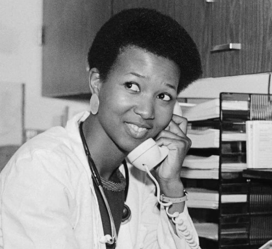

“Nunca seja limitado pela imaginação limitada de outras pessoas."
Mae Carol Jemison é uma médica, engenheira e ex-astronauta estadunidense. Foi a primeira mulher negra a ir para o espaço, quando serviu como especialista de missão a bordo do ônibus espacial Endeavour. Jemison se uniu ao grupo de astronautas da NASA de 1987 e serviu na missão STS-47 em 1992.
Nascida no Alabama EUA, em 17 de outubro de 1956, veio de uma família de classe média, filha de Charles Jemison e Dorothy Jemison. O pai foi um supervisor de manutenção para uma organização de caridade e a mãe foi professora de inglês e matemática em uma escola de ensino fundamental em Chicago. Jemison sabia desde nova que queria estudar ciência e ir para o espaço. O programa de televisão Star Trek, em particular a atriz negra Nichelle Nichols interpretando a Tenente Uhura, alimentaram o seu interesse no assunto. Os seus pais deram apoio a essas ambições. Além de seu intersse pelo espaço Mae, sempre teve paixão pela dança. Aprendeu danças africanas e japonesas.
NASA
Em 4 de junho de 1987, Mae Jemison se tornou a primeira mulher afro-americana a ser admitida no programa de treinamento de astronautas da NASA e, em 1992, foi a primeira mulher afro-americana a viajar para o espaço. Ela viajou a bordo do ônibus espacial Endeavour, na missão STS-47 e, durante os oito dias em que esteve no espaço, Mae Jemison conduziu experimentos sobre falta de peso e enjoo de movimento na tripulação e em si mesma, totalizando 190 horas no espaço. Depois de servir na NASA, de 1987 a 1993, Jemison fundou o Jemison Group, Inc., que desenvolveu o ALAFIYA, um sistema de telecomunicações por satélite. O objetivo deste sistema era melhorar os cuidados médicos nos países em desenvolvimento.
Em março de 1993, a astronauta saiu da agência espacial. Na época, ela afirmou estar interessada em estudar mais a fundo como a tecnologia espacial pode interagir com o dia a dia das pessoas comuns. Dois anos depois da missão, ela lançou um programa internacional de ciência para crianças chamado “The Earth We Share” (A Terra Que Compartilhamos). Atualmente, Jemison também lidera a organização “100 Year Starship”, que tem como objetivo enviar humanos para além do Sistema Solar nos próximos 100 anos.